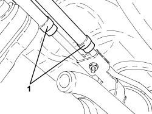
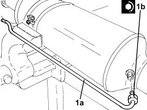
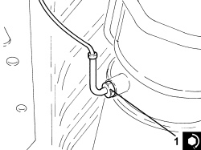

1080B81 PARTICULATE FILTER (D.P.F.) - R R
- Path
- Procedures > 10 ENGINE > 1080 EMISSION CONTROL SYSTEM > 1080B EXHAUST EMISSION CONTROL SYSTEM > 1080B81 PARTICULATE FILTER (D.P.F.) - R R
- Kind
- repair procedure (removal / refitting; the operation number is the code)
- Applies to
- engines: 1.9 JTD 8v, 1.9 JTD 16v, 2.4 JTD 20v; all production periods
- Interactive page
- https://sloeber94.github.io/elrnDB-fCrm/en/#/194002190
Applies to: engines: 1.9 JTD 8v, 1.9 JTD 16v, 2.4 JTD 20v; all production periods
 Removing
Removing
 Refitting
Refitting- Position the vehicle on a lift.
1. Undo the bolts (1a) and the nuts (1b) and remove the particle filter mounting bracket (1c).

Applies to: engines: 1.9 JTD 8v, 1.9 JTD 16v, 2.4 JTD 20v; all production periods
1. Loosen the bands and disconnect the flexible pipes from the rigid pipes for the particle filter differential pressure sensor.

Applies to: engines: 1.9 JTD 8v, 1.9 JTD 16v, 2.4 JTD 20v; all production periods
1. Undo the exhaust gas temperature sensor on the particle filter and remove it.

Applies to: engines: 1.9 JTD 8v, 1.9 JTD 16v, 2.4 JTD 20v; all production periods
1. Loosen the collar (1a), undo the nuts (1b) and remove the particle filter (1c) complete with seal.

Applies to: engines: 1.9 JTD 8v, 1.9 JTD 16v, 2.4 JTD 20v; all production periods
1. At the bench, undo the connector (1a) and remove the vacuum intake pipe downstream of the particle filter (1b).

Applies to: engines: 1.9 JTD 8v, 1.9 JTD 16v, 2.4 JTD 20v; all production periods
Refitting
Removing1. Place the pressure intake pipe downstream of the particle filter (1a) in its housing and tighten the connector (1b) to the recommended torque.
Component | Fastening | dia | Value (daNm) | Validity |
|---|---|---|---|---|
Pressure intake pipe downstream of particle filter | Connector | - | (D.P.F. particle filter side) 1.2 - 1.6 | 1.9 JTD 16v 1.9 JTD 8v 2.4 JTD 20v |

Applies to: engines: 1.9 JTD 8v, 1.9 JTD 16v, 2.4 JTD 20v; all production periods
1. Place the particle filter (1a) in its housing complete with seal, then tighten the collar (1b) and the nuts (1c) to the recommended torque.
Component | Fastening | dia | Value (daNm) | Validity |
|---|---|---|---|---|
Intermediate exhaust pipe with flexible section | Nut | M8 | (D.P.F. particle filter side) 1.2 - 2.6 | 1.9 JTD 16v 1.9 JTD 8v 2.4 JTD 20v |

Applies to: engines: 1.9 JTD 8v, 1.9 JTD 16v, 2.4 JTD 20v; all production periods
1. Place the exhaust gas temperature sensor in its housing on the particle filter and tighten it to the recommended torque.
Component | Fastening | dia | Value (daNm) | Validity |
|---|---|---|---|---|
Exhaust gas temperature sensor on particle filter | - | M14x1.5 | (D.P.F. particle filter side) 4.5 | 1.9 JTD 16v 1.9 JTD 8v 2.4 JTD 20v |

Applies to: engines: 1.9 JTD 8v, 1.9 JTD 16v, 2.4 JTD 20v; all production periods
- Connect the flexible pipes to the rigid pipes for the particle filter differential pressure sensor and tighten the bands.
- Place the particle filter mounting bracket in its housing and secure it using the nuts and bolts.
- Remove the vehicle from the lift.